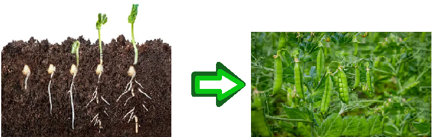

HOW TO GROW PEA PLANT FROM SEED

STEP 1: Soaking
- Soften the seed coat by soaking the pea seeds in water for 12 hours before planting. This encourages more rapid germination.
STEP 2: Choose the Right Soil
- Peas prefer well-draining soil with a pH between 6.0 and 7.0. If your soil is heavy clay or sandy, mix in organic matter like compost to improve its structure.
STEP 3: Sowing
- Plant the soaked seeds 1 inch deep and 3 inches apart for vining varieties or 4-5 inches apart for bush varieties. You can also sow in rows, with seeds spaced 1-2 inches apart.
STEP 4: Temperature
- : Wait until the soil reaches a temperature of around 10°C (50°F) before sowing. If spring is slow to arrive, warm the soil with polythene sheeting or a cloche before sowing.
STEP 5: Watering
- Keep the soil consistently moist during the germination period (7-10 days). Once seedlings emerge, reduce watering to about 1 inch per week.
STEP 6: Support
- Provide support for vining pea varieties by installing a trellis, fence, or other structure for them to climb.
STEP 7: Thinning
- Once seedlings have 2-3 sets of leaves, thin them out to 6-8 inches apart to prevent overcrowding and promote healthy growth.
STEP 8: Maintenance
- Keep the area weed-free and provide moderate maintenance, including occasional watering and fertilization.
STEP 9: Harvest
- Peas are ready to harvest when the pods are plump and tender. Check for readiness by gently tugging on a pod; if it comes off the stem easily, it’s ready. Harvest regularly to encourage the plant to produce more pods.
Important NOTE
- Peas are a cool-season crop and grow well in temperatures below 70°F (21°C). Growth and pod production decline above 85°F (29°C).
- Consider planting peas in late summer for a fall harvest, about 2 months before your average first frost date. This allows for a second crop before winter.
- Pea shoots can also be grown indoors or in shady outdoor spaces, using the same basic steps. Simply sow the seeds in a container and keep them moist and bright.
By following these steps, you should be able to successfully grow a litchi plant from seed. Good luck!